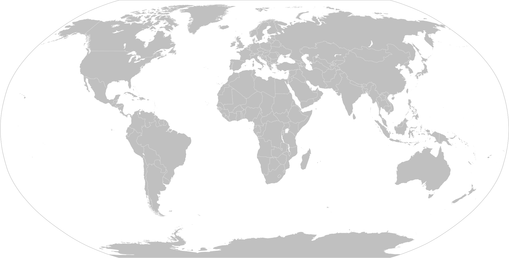

MARKET SIZE · 2025 · KRW
글로벌 76.6조의 시장,
우리는 417억에서 시작합니다
주니어 운동선수의 기록이 상품이 되는 시장은 아직 비어 있습니다. TAM은 글로벌, SAM은 중국·일본, SOM은 국내 전체, RAM은 국내 야구·축구로 나눠 진입 순서를 설계했습니다.
3년차 목표 4.7억 원은 RAM 417억의 1.13%. 점유율이 아니라 단위경제를 증명하는 숫자입니다.
진입 순서
①한국 0~18개월 · 단위경제
→
②일본 18~36개월 · 직접 진입
→
③중국 36~48개월 · 라이선스
크기 순서가 아니라 진입 가능 순서입니다.
76조 5,810억원
전 세계 유소년 스포츠 지출 · CAGR 9.9%
G1 · 2025
4조 9,338억원
중국 4조 2,408억 + 일본 6,930억
C1 · J1·J2
2,083억원
운동하는 청소년 221만 6,160명
K1 · K3
417억원
야구·축구 44만 3,232명 · 20% 가정
K2 · [가정]